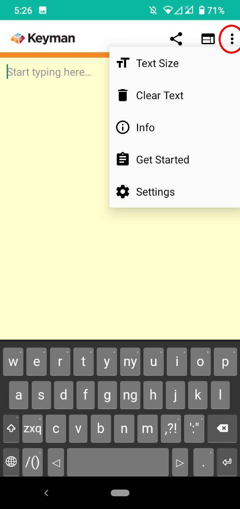
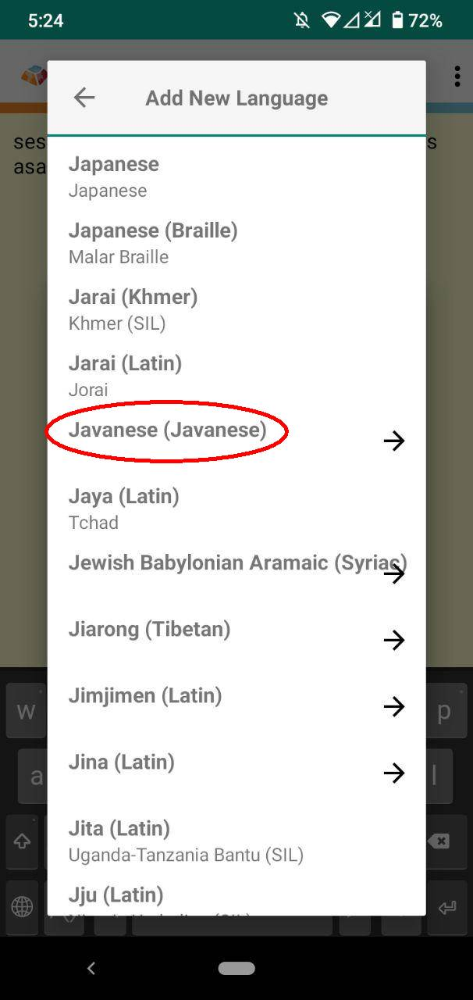
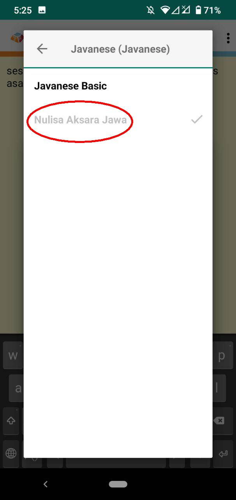
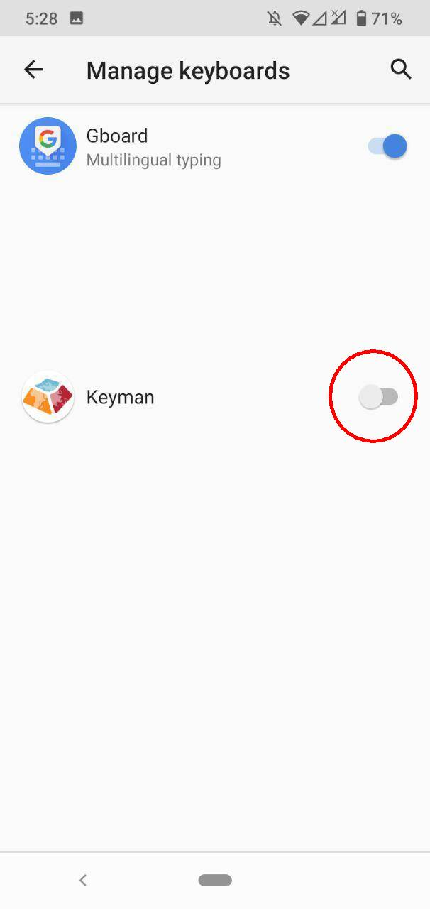
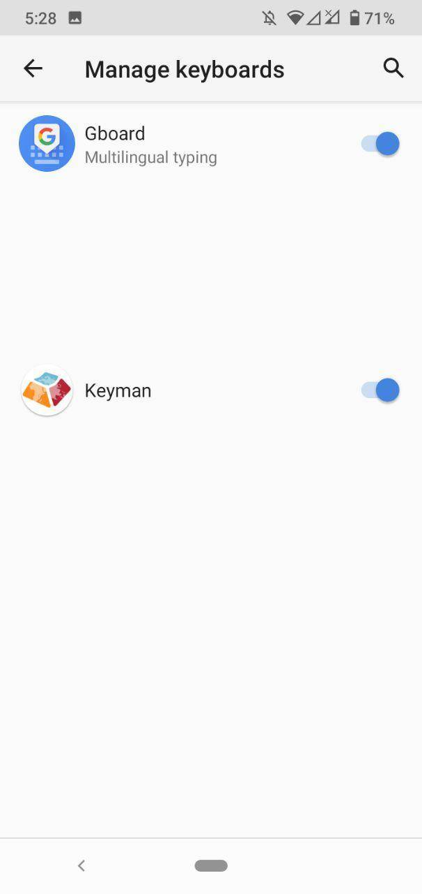
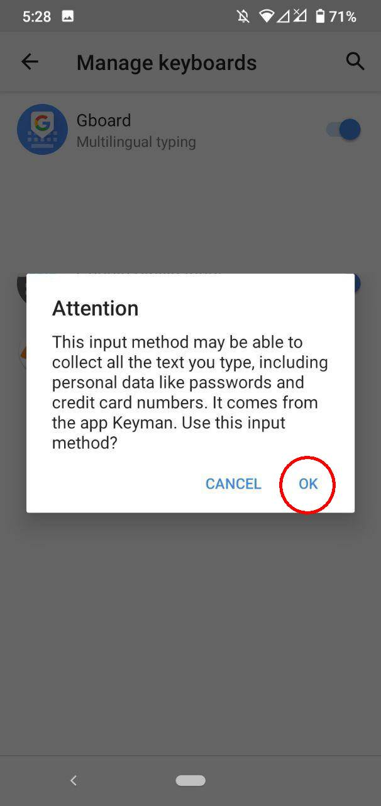
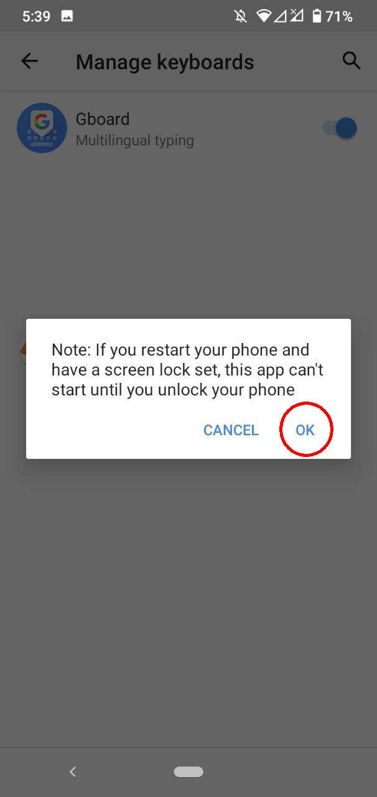
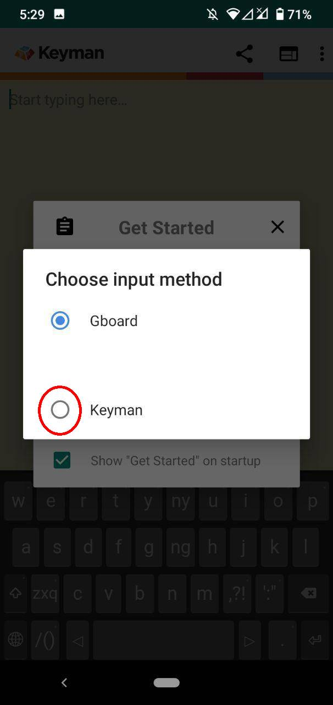

Notice that the keyboards are in development state, and therefore can change at any time. For the latest version and the changes, please refer to the changelog.
Current version 1.0 (January 2020).
This is the latest installer for Keyman Desktop for Windows with the Nulisa Aksara Jawa Keyboard budled in a single installer.
The Nulisa Keyboard is special because it doesn't require the user to memorize any character position in a physical keyboard. Rather, it receive Latin input, and convert it automatically into Javanese script. This is especially useful among Javanese speaker in Indonesia that has already used to reading and writing in Latin, regretfully. Therefore, the layout on the desktop are remain the same (QWERTY layout).
Two Latin letters are unused in Javanese script: Q and X. In place of Q is 'pangkon', but rarely invoked, because the script is smart enough to add one. In place of X is 'e-pepet', which is very often used, as there are two kinds of 'e's, one regular (taling) on letter E, and one schwa (e-pepet) on letter X.
How to install it in your phones:
- Download "Keyman" in PlayStore or AppStore:
https://play.google.com/store/apps/details?id=com.tavultesoft.kmapro
https://apps.apple.com/us/app/keyman/id933676545 - Open the app, follow the 3 steps short guide ("Get Started", if it doesn't show, choose under the three dots) in the app:

- Add a keyboard: Choose "Javanese" then "Nulisa Aksara Jawa". Don't choose "Javanese Basic".
 - Enable Keyman as system wide keyboard. Some phones may prompt another security question. Click Yes. You can trust this app.

 - Set Keyman as default keyboard

- Add a keyboard: Choose "Javanese" then "Nulisa Aksara Jawa". Don't choose "Javanese Basic".
Papan ketik Nulisa Aksara Jawa spesial karena tidak memerlukan Anda untuk menghafal posisi karakternya di kibor. Anda hanya perlu mengetik seperti mengetik huruf Latin, dan akan menghasilkan Aksara Jawa. Hal ini terutama berguna untuk pengguna yang sudah biasa mengetik dan membaca dalam huruf Latin. Oleh karena itu, desain kibor ini dibuat semirip mungkin dengan desain QWERTY.
Ada dua huruf Latin yang tidak terpakai di Aksara Jawa: Q dan X. Di lokasi Q diganti dengan 'pangkon', namun akan jarang digunakan, karena programnya sudah cukup pintar untuk menambahkan pangkon. Di lokasi X diganti dengna 'pepet', karena dalam Aksara Jawa mengenal dua macam bunyi 'e', yaitu 'taling' (di tombol 'e') dan 'pepet' (di tombol 'x').
Bagaimana cara memasang di HP Anda:
- Unduh "Keyman" di PlayStore atau AppStore:
https://play.google.com/store/apps/details?id=com.tavultesoft.kmapro
https://apps.apple.com/us/app/keyman/id933676545 - Buka aplikasi, ikuti 3 langkah sederhana ("Get Started", jika tidak muncul, tekan tombol tiga titik) berikut ini:
- Add a keyboard (Tambahkan papan ketik): Pilih "Javanese" lalu pilih "Nulisa Aksara Jawa". Jangan pilih "Javanese Basic".
- Enable Keyman as system wide keyboard (Nyalakan Keyman sebagai kibor HP Anda). Beberapa jenis HP mungkin memunculkan pertanyaan keamaan lanjutan. Klik OK. Anda bisa mempercayai aplikasi ini.
- Set Keyman as default keyboard (Jadikan Keyman sebagai kibor baku).
- Add a keyboard (Tambahkan papan ketik): Pilih "Javanese" lalu pilih "Nulisa Aksara Jawa". Jangan pilih "Javanese Basic".
The desktop layout and the first layer of touch layout (image 1) are similar.